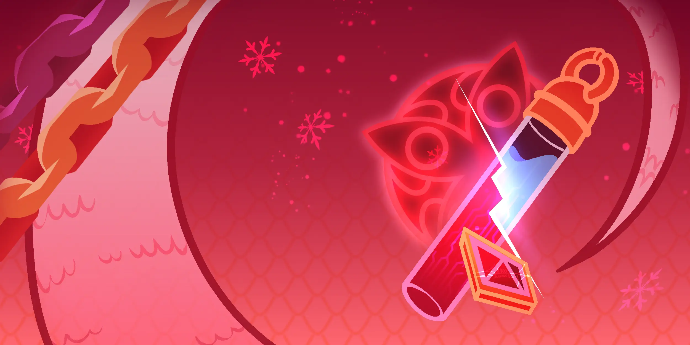
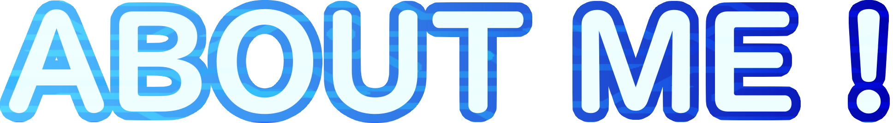
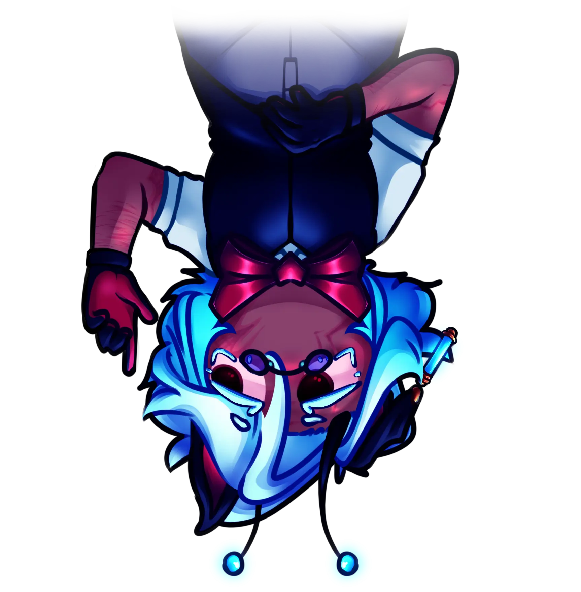
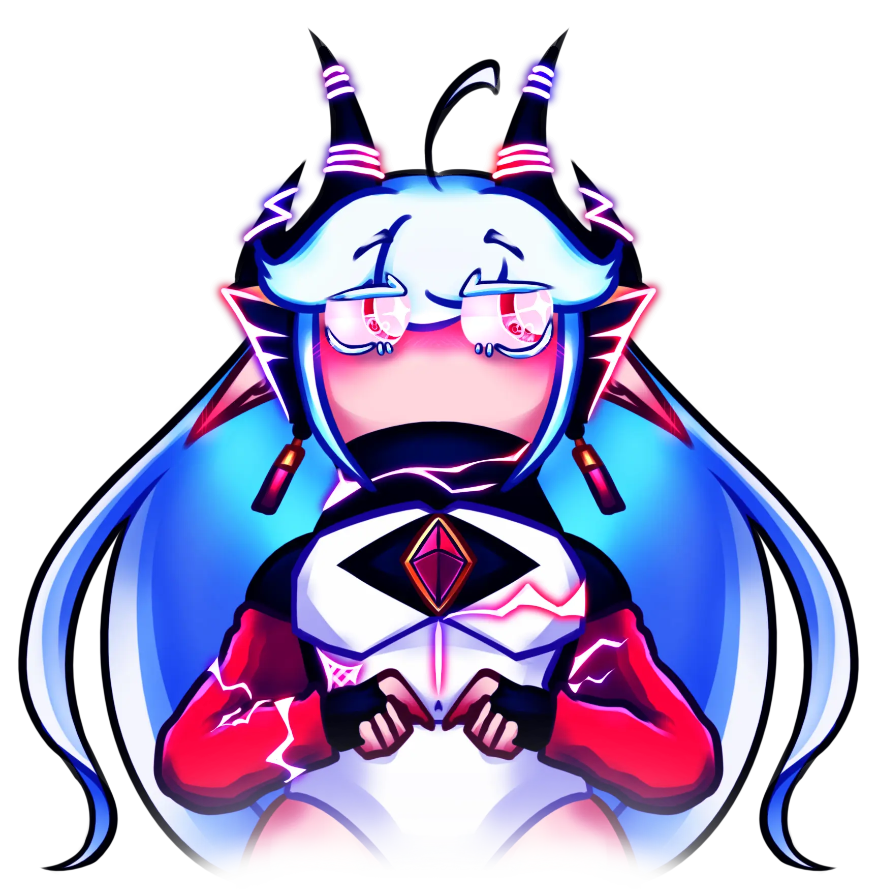

Hihi!! I'm Xeraphim, also known as snowst0rm (main username), techno (from techn0verload), artic (from art1csn4ke), shiro (irl name), viper, or snake.
Those are just the base names. I have way too many to list, lol.
My pronouns are it/he. I can accept they/them, but I'd prefer to avoid them, and no she/her unless I explicitly give permission.
I do like neo/xeno pronouns, but I'm extremely picky about which ones and who I allow to use them.
I spend most of my free time hyperfocusing on different things. Unless I'm extremely fixated on a project or getting paid for it, there's a very real chance I'll leave it halfway done. It happens.
Yes, I use “LOL” and “LMAO” unironically. Yes, I can stop if asked. Yes, I will struggle to express friendliness without them.
I'm the kind of person who will listen to almost anything, but it heavily depends on my mood and mindset.
Also, please don't recommend me songs. I will forget to look them up, and when you ask if I listened I'll just stare at you like a confused dog.
I do have a YouTube playlist though (that I rarely use because I listen to downloads instead). Here's the link:
Click me for cool music!!I'm really into things with structure. I like systems, worldbuilding, character dynamics, backend logic, lore writing — anything where everything connects.
I tend to build really intricate universes in my head and rarely get them into a physical form. So you'll either hear me ramble while fixing plot holes in real time, or you'll get a polished project once I get fixated enough. Same outcome, different delivery.
Funny fact: this website exists because I got too fixated on one of my fictional stories.
The real question is… what don't I do?
Music. I cannot grasp music to save my life (maybe one day!).
I actually can play the guitar, barely.
I do digital art, writing, coding, and UI design. I've also made videos for TikTok before, so I know basic video editing.
I can animate and I have done 3D modeling before; I once crashed my laptop with a toothbrush model... Erm...
I like when everything I make is connected in some way, but sometimes things are just random ideas that needed to exist. Ideas must be made!
I'm lowkey a Sim that has an owner that wants to get every single skill on it ever.
Mandatory mention:
I'm the #1 cybersnake fan.
“What is cybersnake?”
It's a ship between my OC and Il Dottore from Genshin Impact — specifically a segment OC I made. So yes, it's an OC × canon ship.
No, I don't consider myself a selfshipper or yumeshipper.
I just enjoy the relationship between my OC and this specific version of the character I created. Nothing more, nothing less.
- Breakcore/Glitchcore music
- Cats
- Colorful art
- Computers
- Cyberpunk/Cybercore aesthetics
- Dogs
- Kemonomimis
- Open world/Exploration based/Quest based games
- Rough textures (like sandpaper!)
- Snakes
- Snow
- Stuffed toys
- The color Red
- Collei from Genshin Impact
- Gore imagery
- Lack of media literacy
- Pro/Com ships
- Rodents
- Routines, for some reason??
- Sexual insinuations/commentary
- Some bugs
- Some games/series/fandoms (Ask for specifics)
- Sudden changes
- The color green
- Two from TPOT
- Warm temperatures
Before You Follow/Interact
I'm very open about my dislikes and discomforts. If a topic makes me uncomfortable, I'll usually say so directly. I can sometimes go overboard when expressing dislike, so feel free to remind me to tone it down if it becomes uncomfortable for you.
I value media literacy and the ability to separate fiction from reality and art from its creator. I believe it's possible to depict or explore negative topics without endorsing or enjoying them. This doesn't mean I support or frequently discuss such topics.
I tend to be neutral-minded and often try to see multiple perspectives. While I do have personal preferences and opinions, I may argue or discuss viewpoints without necessarily agreeing with or supporting them.
I don't post very often, mostly due to shyness. My texting style can come across as blunt, awkward, or rude; it's not intentional.
Regarding AI: I believe generative AI can be useful as a tool, but not as a replacement for human creativity. I'm aware of its ethical and environmental issues and don't think it should be as widely accessible as it currently is. I'm not interested in debating this topic.


Do Not Follow/Interact
Do not interact if you support, participate in, tolerate, or justify discrimination of any kind, including but not limited to homophobia, transphobia, xenophobia, Islamophobia, misogyny, racism, sexism, or ableism. This also includes invalidating someone's pronouns, gender, or identity, as well as pedophilia, sexualization of minors, or jokes about sexual violence.
Please do not interact if you identify as or roleplay as Collei (Genshin Impact)
or Two
(TPOT) in any form (IRLs, introjects, fictionkins, kinnies, #1 fans
,
etc.). I don't think you're inherently bad as a person, but these
characters are severe
discomforts for me.
I'm not interested in interacting with people who actively support Vivziepop's work. If Hazbin Hotel or Helluva Boss are a major part of your online presence, we likely won't get along. Same goes for The Pink Corruption (TPC) and Five Nights at Freddy's (FNAF) fans.
Do not interact if you lack media literacy or cannot separate fiction from reality. While fiction can influence reality, it has always been a medium for expression, critique, and exploration of both positive and negative topics. If you require constant disclaimers to understand that depiction does not equal endorsement, we are not compatible.
Proshippers and comshippers DNI. While I believe in separating fiction from reality, this is a personal boundary. Content centered around abusive, incestuous, or pedophilic dynamics makes me uncomfortable, regardless of framing. Please keep it away from me.
Anyone under 17 years old DNI. I'm an adult and prefer my followers and direct interactions to be with an older audience. I may be polite if interaction is unavoidable, but I'm not seeking friendships or private conversations with minors.
Lastly, do not interact if you engage in perfect morality
behavior or moral
grandstanding.
I've made mistakes in the past, I've taken responsibility for them, and I've grown. I'm not
interested in being defined solely by past actions, especially those that occurred while I was a
minor in unsafe situations.